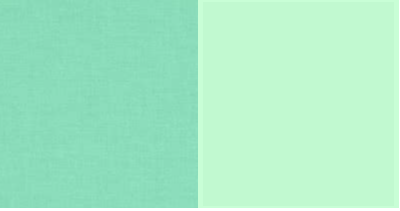

I can't decide between many foods to be my favorite. I like
noodles
pasta
ice cream
french fries
and caramel pudding

My favorite animal is a dolphin. They're both cute AND smart. (:

My favorite colors are always changing. Right now, I think I like mint green/sea foam green the most.
